Exploring the brain: a tour of the structures of the nervous system
Learning Objectives
By the end of this chapter, you will:
- understand the organisation and main components of the nervous system
- have a sense of how information flows through the nervous system.
What does the brain do?
All our thoughts and actions are biological structures and processes that work together to enable us to successfully exist and interact with the world, performing behaviours that keep us fed, watered and safe. In this chapter we will learn about the different parts of the nervous system that orchestrate these behaviours.
First, however, it is worth considering, on a very general level, what our brains and the nervous system do. They take in information from the outside world, and our bodies, and work out what is the best thing to do next. They then cause changes in our bodies to enable that thing to happen, whether that’s running away from a lion, catching a ball, or going to sleep.
In this chapter, we are going to explore the structures, circuits and cells of the nervous system, in order to understand broadly how information flows into, through, and from the brain. You will learn a bit about how these structures and cells generate behaviours and internal responses that allow us to successfully adapt to and interact with what’s going on around and inside us. You’ll learn much more about this in following chapters of the book.
The nervous system as a computer
The nervous system is the network of neurons and supporting cells, termed glia, that do this job of detecting something, transmitting that information, integrating it with other information, and sending an instruction to other parts of our body to do something about it. In other words, our nervous system is like a computer. It takes an input, performs a computation on that input (using the programs running on that computer – these determine what computation is performed), and generates an output. In fact, every part of the nervous system does this same ‘input – computation – output’ job, but using different inputs, running different programs and generating different outputs. The whole nervous system might detect visual information that a lion is coming, compute that it would be a good idea to run away, and generate patterns of muscle contractions in your legs to make you run. On a microscopic scale, a single nerve cell, or neuron, might receive inputs carrying information about light falling on your retina in different locations, and integrate that information to conclude and output the information that the light falling on the retina was forming a vertical line. The program run by a given cell or structure in the nervous system is determined by how that cell or structure is connected to other cells or structures, and the biological rules that govern those connections and how they change over time. We’ll learn much more about that throughout the next few chapters of this book.
First of all though, we need to learn our way around the nervous system. This chapter gives you an introduction to the anatomy of the nervous system. It should help you understand the organisation of the nervous system as well as introduce the function of some of its major components. You’ll learn much more about how these structures perform their functions in later chapters.
Parts of the nervous system
The nervous system is made up of the central nervous system and the peripheral nervous system (Figure 2.1).
The central nervous system (CNS) comprises the brain and the spinal cord, while the peripheral nervous system (PNS) is the network of neurons and nerves that lie outside these two structures and connect the CNS with the rest of the body. It includes most of the cranial nerves, that connect to the brain as well as the spinal nerves that take information to and from the spinal cord. The PNS provides the input to the CNS, which computes what to do with that information, and sends outputs back to the body, via the PNS. Symmetry around the midline is a general feature of nervous system organisation.
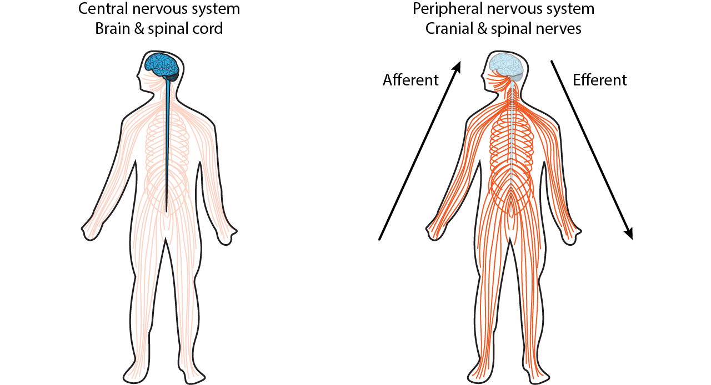
The peripheral nervous system
The PNS can be subdivided into two parts: the somatic and autonomic nervous systems. The autonomic nervous system can then be subdivided into three further divisions: the sympathetic, parasympathetic and enteric nervous systems.

The somatic nervous system
The somatic nervous system deals with interactions with the external environment: sensing the outside world via sensory neurons, and sending signals via motor neurons to control skeletal muscles to generate movements and behaviours that interact with that world. Many of these behaviours are voluntary, and are initiated by complex decision making processes in the brain. You hear a voice calling, you interpret the language, and turn towards the sound of your name. The somatic nervous system can also generate involuntary movements, however, via reflexes, in which a sensory input activates a motor response without voluntary control. The simplest of these reflexes involve only a single sensory neuron activating a single motor neuron. An example is the muscle stretch reflex, in which sensory neurons detect stretch in a muscle, causing motor neurons to activate the same muscle to contract it more and counter the stretch. So if you lean to one side, stretching core postural muscles, this reflex constricts those muscles, keeping you stable. Or if someone adds a heavy weight to something you’re carrying, stretching your arm muscles, they then constrict so you don’t drop the load. Even these simplest reflexes involve information transfer from PNS to CNS, as the connection or synapse between these two neurons occurs in the spinal cord – part of the CNS.
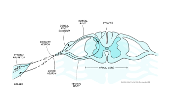
Indeed, there are no neurons that exist wholly in the peripheral somatic nervous system: somatic sensory neurons synapse for the first time in the CNS, while somatic motor neurons’ cell bodies are found in the CNS, with their axons leaving the CNS to innervate muscles.
These afferents (carrying sensory information inwards to the CNS) and efferents (carrying motor information outwards from the CNS) form cranial nerves and spinal nerves. (Nerves are just bundles of axons – the long projections that each neuron has to carry electrical impulses). Cranial nerves innervate the head and carry information including about smell, taste, hearing, and control of facial muscles to and from their targets directly into the brainstem. Spinal nerves carry information to and from the skin and skeletal muscles to the spinal cord. There are 31 pairs of spinal nerves, which carry sensory and motor information from specific parts of the body into the spinal cord. The region of skin innervated by afferents from a given spinal nerve is called a dermatome, while the muscles contacted by efferents from a single nerve are called a myotome.

The sensory and motor parts of the nerve split apart at the spinal cord. Sensory afferents enter the dorsal root of the spinal cord, their cell bodies forming the dorsal root ganglion just outside the spinal cord. Motor neurons exit the spinal cord from the ventral root (Figure 2.3) before synapsing at neuromuscular junctions on skeletal muscle where they release acetylcholine to initiate muscle contraction (see the section Interacting with the world).
The autonomic nervous system
In contrast with the more voluntary control mediated by the somatic nervous system, the autonomic nervous system mediates interactions with the body’s internal environment, for example regulating heart rate. These interactions are broadly involuntary reflexes, though modulated by the brain, and some of this regulation can be consciously done, for example people can train themselves to exert control over their heart rate. As in the somatic nervous system, sensory neurons provide information about the internal organs to the CNS, and motor neurons produce effects on the internal organs, often by modulating the tone of smooth muscle, for example to change blood vessel diameters. Outside the autonomic nervous system, non-neuronal pathways can also send information about the internal body state to the brain. For example, neurons in a brain region called the hypothalamus can detect increases in blood temperature, activating brain circuits that can then cause autonomic nervous system activation and increase blood vessel dilation in the skin as well as sweat gland activation.
The sympathetic, parasympathetic and enteric nervous systems
Now let’s consider the different divisions of the autonomic nervous system:
The enteric nervous system is a large mesh of neurons which is embedded in the wall of the gastrointestinal system, from the oesophagus to the anus, and regulates motility and secretion of hormones. In humans, it contains around 500 million neurons, 0.5% of the number found in the brain and 5 times more than are found in the spinal cord. It can function without input from the brain, though can also be regulated by descending input.
The sympathetic and parasympathetic divisions of the autonomic nervous system are often thought of as the ‘fight-and-flight’ and ‘rest-and-digest’ systems, respectively, as they generate motor responses that broadly promote action or relaxation. For example, sympathetic activation increases heart rate, and increases blood flow to the brain, heart and skeletal muscles, priming the body for action. Conversely, activation of the parasympathetic nervous system reduces heart rate and blood flow to the brain, heart and skeletal muscles, instead directing blood flow to the gut and stimulating digestion.
While it is useful to think of the distinction between ‘fight and flight’ and ‘rest and digest’ functions of the two systems, the body doesn’t switch in a binary manner between one or the other being active but rather the body’s state depends on the balance of activity of the two systems at any one time. Furthermore, this balance is not uniform across the body, as is apparent from the need to independently regulate different organs, for example to control heart rate and bladder release.
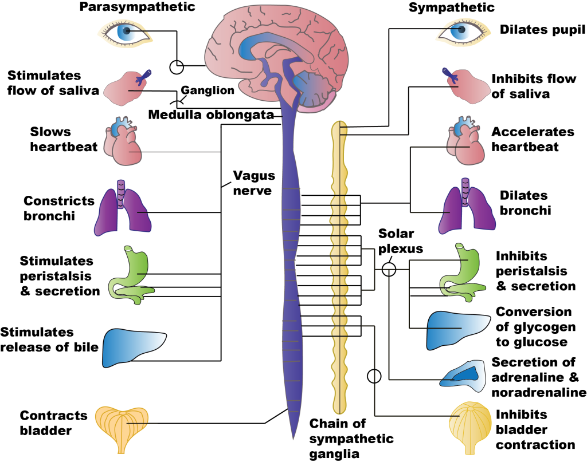
The sympathetic preganglionic neurons leave the thoracic and lumbar spinal cord to synapse in either the sympathetic chain ganglia just outside the spinal cord, or in the prevertebral ganglia including the solar plexus or mesenteric ganglia within the abdomen. Preganglionic neurons use acetylcholine as their neurotransmitter. Postganglionic neurons – the motor neurons of the sympathetic division – use noradrenaline as their neurotransmitter, and often travel along the same nerves as the somatic nervous system [NB: Noradrenaline is called norepinephrine in the US, and adrenaline is called epinephrine].
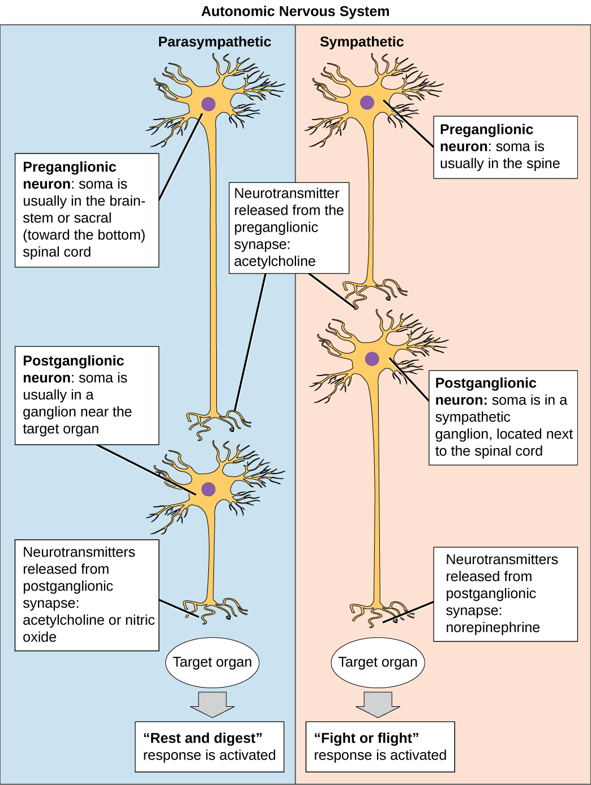
Parasympathetic neurons leave the CNS via cranial nerves or via sacral regions of the spinal cord. These neurons synapse in ganglia that are generally very close to the organs to be contacted, so parasympathetic preganglionic neurons are much longer than the postganglionic neurons. The vast majority of parasympathetic fibres form the vagus nerve, which innervates most of the organs in the thorax and abdomen. Both pre and post-ganglionic parasympathetic neurons use acetylcholine as a neurotransmitter.
Key Takeaways: Peripheral Nervous System
- The PNS delivers sensory information to the CNS and sends instructions from the central nervous system to control motor outputs
- The PNS is made up of the somatic and autonomic nervous systems, dealing with interactions with the external and internal environments, respectively
- The autonomic nervous system comprises the enteric nervous system in the gut and the sympathetic, and parasympathetic divisions which have broadly opposing effects on our internal organs
- Sensory neurons synapse first in the CNS. Somatic motor neurons exit the CNS and release acetylcholine onto skeletal muscles, whereas autonomic neurons synapse onto motor neurons at ganglia outside the CNS
- Acetylcholine is the neurotransmitter released by preganglionic neurons and parasympathetic motor neurons, while noradrenaline is released by sympathetic motor neurons.
The Central Nervous System
Compass directions
The CNS comprises the brain and spinal cord. They, particularly the brain, are complex 3D structures, so before we explore them, it’s useful to consider the language we can use to describe what exactly we are looking at and where different parts are located with respect to other regions.
We can look at the surface of the brain from different angles. In humans, if we look from the front, we are looking at the anterior surface, or from the back we are looking at the posterior surface. If we look at the top, we are looking at the superior surface or from below, the inferior surface. These words can also be used to describe relative positions of things within the brain too (e.g. visual cortex is posterior to auditory cortex).
To confuse matters, however, the front of the brain can also be referred to as rostral (meaning towards the nose), the back as caudal (meaning towards the tail), the top as dorsal (towards the back) and the bottom as ventral (towards the stomach).
In the brain these terms don’t really make sense – dorsal regions are towards the top, not towards the back of the head. They make much more sense in the spinal cord – dorsal spinal cord really is towards the back, not the top. The reason for the confusion is that humans walk upright so our brain is angled relative to the spinal cord.
![Outline of human figure looking to the left with a brain and spinal cord. Compass directions for the nervous system are labelled; dorsal (top of brain), ventral (bottom), rostral (front) and caudal (back). An arrow at the top indicates anterior is the direction the figure is looking in, posterior the opposite (behind); superior is the top of the figure, inferior the bottom. A second image is of the brain viewed from the top. Rostral and caudal are labelled (front and back); lateral describes the horizontal measure, with medial, the mid point, aligned with the centre of the brain. We can use these compass directions to describe whether we’re looking at the front, back, top or bottom of the brain.](../assets/media/aa98e5f8098cc4a3-anatomicaldirections.png "'Anatomical Directions’ by Casey Henley is licensed under a Creative Commons Attribution Non-Commercial Share-Alike (CC BY-NC-SA) 4.0 International Licence. Available from: https://openbooks.lib.msu.edu/neuroscience/chapter/anatomical-terminology")
In most animals (e.g. think of mice), the brain continues in a straight line from the spinal cord, so the dorsal brain is aligned with the back of the animal. In humans, however, the top of our head points in a different direction to our back. All in all, this means we have lots of words we can use to describe whether we’re looking at the front, back, top or bottom of the brain.
We don’t just want to look at the brain from the outside surfaces, though, but to see inside at the many structures within. To do that we can virtually or physically slice through it, creating sagittal, coronal or horizontal/transverse slices. In doing so, we can notice that symmetry is a general feature of CNS organisation: the left and right halves of the brain and spinal cord are symmetrical around a midline. We can describe structures’ locations with respect to this midline as being medial (closer to the midline) or lateral (closer to the side), as well as describing their anterior-posterior/rostral-caudal and superior-inferior/dorsal-ventral dimensions.
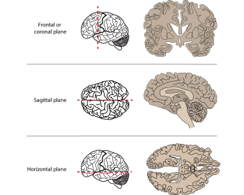
Fig 2.8. Anatomical slices allow us to visualise inside the brain
The spinal cord
The spinal cord can be divided into segments, each of which connects to a pair of sensory and motor nerves. Towards the head are 8 cervical segments, below which are 12 thoracic segments, 5 lumbar segments and 5 sacral segments (Figure 2.4).
The spinal cord carries afferent, somatosensory (touch) information up to the brain and efferent (motor) information to the muscles of the body. It comprises grey matter (neuronal cell bodies and short range connections) around a central canal, containing cerebrospinal fluid, surrounded by a number of white matter tracts containing myelinated and unmyelinated axons forming connections to other regions. Both the grey and white matter are organised. For example, the dorsal column of the white matter contains axons from somatosensory neurons whose cell bodies are located in the dorsal root ganglia, while the lateral corticospinal tract contains axons from motor neurons from the cerebral cortex which control voluntary movement of the limbs. The grey matter is where connections between different neurons form and contains cell bodies, dendrites and synapses as well as axons. Spinal cord grey matter can be divided into three ‘horns’ (Figure 2.9), the dorsal horn containing neurons carrying sensory information, the lateral horn largely containing sympathetic motor neurons, and the ventral horn containing cells conveying motor information.
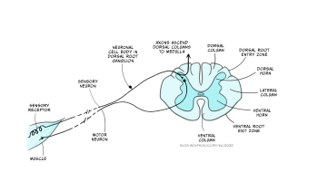
The brain
The brain itself is made up of the brainstem, the cerebellum and the forebrain.
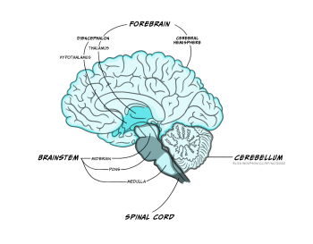
The brainstem
A lot of the volume of the brainstem contains white matter tracts carrying information up to the rest of the brain or down to the spinal cord, as well as to and from the cranial nerves that provide sensory and motor inputs to the face and neck. Within the medulla, the pyramids, so called for their shape, are prominent white matter bundles that carry descending motor axons to the spinal cord. On the ventral surface of the pons are the bridge-like wide mass of transverse fibres (perpendicular to the axis of the brain stem and spinal cord), from which the pons derives its name (pons is Latin for bridge). These fibres connect the brainstem to the cerebellum.
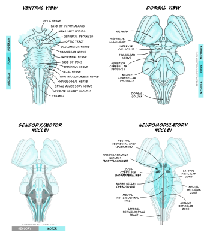
Nestled within the numerous white matter tracts passing through the brainstem are a number of grey matter nuclei (clusters of neuronal cell bodies). These nuclei include motor or sensory cranial nerve nuclei, containing cell bodies of neurons that project into or receive connections from the cranial nerves, as well as the dorsal column nuclei where many neurons carrying touch information from the spinal cord form their first connections. Also within the brainstem are nuclei that produce neuromodulators that are released over relatively large regions of forebrain and are involved in regulating arousal, attention, mood, movement, motivation and memory. Many of these neuromodulators are well known and will make several appearances elsewhere in this book: Dopamine is produced in neurons in the ventral tegmental area and substantial nigra pars compacta of the midbrain, serotonin from neurons in the Raphe nuclei that extend from the medulla to the midbrain, noradrenaline in neurons in locus coeruleus of the midbrain and the medial reticular zone of the pons, and acetylcholine in neurons of the pedunculopontine nucleus in the pons (as well as in the basal forebrain). Other brainstem nuclei, particularly in the medulla, regulate key functions for sustaining life, including breathing, heart rate, swallowing and consciousness. Brainstem damage can therefore be life-threatening, and can occur due to brain swelling compressing the brainstem against the skull.
Cerebellum
 from Anatomography. Licence: CC BY-SA 2.1 JP https://creativecommons.org/licenses/by-sa/2.1/jp/deed.en Available from: https://commons.wikimedia.org/w/index.php?curid=9803609")
The cerebellum, or ‘little brain’, lies inferior to the occipital and temporal lobes of the cerebral cortex, and posterior to the pons.
. Available from: https://commons.wikimedia.org/wiki/File:Cerebellum_cross-section,_without_labels_(colorized).png. Public domain.")
Its cells are organised in clear layers – that is, it has a laminar structure – with a distinct connectivity that has made it a very interesting structure for neuroscientists to study. It receives inputs via ‘mossy fibres’ from nuclei in the pons, which in turn receive information from wide areas of the cerebral cortex, containing sensory and other information. These mossy fibres then synapse onto granule cells – small neurons which are packed together to form the granule cell layer. The human brain contains 50 billion granule cells – about 3/4 of the total number of neurons in the brain. The axons of these granule cells rise vertically from the granule cell layer into the molecular layer, where they split in two and send axons in opposite directions, forming a T shape. The axons of different granule cells are aligned parallel with each other, and are termed parallel fibres.
These parallel fibres synapse onto the highly branched, flat dendritic trees of Purkinje cells, the output cell of the cerebellum which sends connections to the deep cerebellar nuclei from which information is sent to the thalamus and onto the cerebral cortex. Purkinje cells also receive synaptic input from ‘climbing fibres’, axons of cells that originate in the medulla and carry information from across the brain, particularly information about ongoing motor processes.
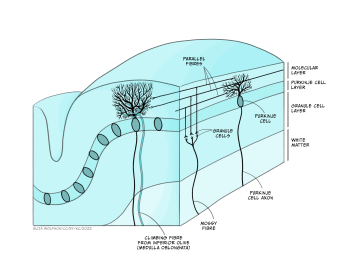
Neuroscientists have been able to interrogate and understand how this highly organised circuitry mediates some of the key functions of the cerebellum, allowing us detailed insights into how the cerebellum performs some of its key functions. The cerebellum is important for bringing together diverse sensory information and using this to guide motor behaviours, making it important for balance and motor learning, such as learning to ride a bicycle, or your fingers learning to play a new tune on the piano. However, while the sensory-motor functions of the cerebellum are the best understood, it also receives many different sorts of information from across the brain. Functional imaging studies and other experiments have demonstrated cerebellar involvement in processes as diverse as language comprehension, autobiographical memory and attention.
Forebrain
The forebrain comprises the diencephalon and, surrounding it the cerebrum – two cerebral hemispheres containing an outer layer- the cerebral cortex and subcortical structures such as the hippocampus, basal ganglia and amygdala.The two cerebral hemispheres are connected to each other via the corpus callosum, a very large white matter tract, with many other white matter tracts connecting different parts of the forebrain to each other.
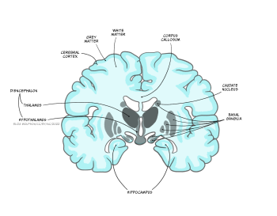
Diencephalon
Extending from the midbrain, the diencephalon’s major components are the thalamus and the hypothalamus.
The thalamus is an information hub, relaying ascending and descending information from widespread brain areas. It is organised into functionally specialised nuclei which process information of certain modalities. For example the dorsal lateral geniculate nucleus of the thalamus receives visual information from the optic nerve and sends projections to primary visual cortex, while the medial geniculate nucleus receives auditory information from the inferior colliculus and projects to auditory cortex. Rather than simply relaying information in one direction, however, a key feature of thalamic processing is that nuclei also receive descending information from the cortex, forming circuits termed thalamocortical loops (or corticothalamic loops). These thalamocortical loops are not limited to sensory processing, but from higher order areas and motor areas as well, and can include additional structures in their circuitry.
For example, the anterior thalamus plays an important role in memory, receiving information from the hippocampus, mamillary bodies of the hypothalamus as well as the cerebral cortex, and projecting to cingulate cortex. Thalamocortical loops that incorporate the striatum and other nuclei of the basal ganglia are also important for motor control and motivated behaviour, via the ventrolateral, mediodorsal and anterior thalamic nuclei. These loops, and others like them we will hear about in other circuits, demonstrate that the ‘input-computation-output’ function of the nervous system is not simply in one direction – instead, outputs from a given region often feed back to structures providing inputs to that region, as well as sending outputs to ‘upstream’ brain areas.
The hypothalamus is located below the thalamus, above the pituitary gland. It consists of around 22 nuclei and is highly connected to the brainstem, the amygdala and the hippocampus. The hypothalamus is involved in regulation of many homeostatic processes, such as the control of eating and drinking, temperature regulation and circadian rhythms, as well as emotion and memory processing and sexual behaviour. Some hypothalamic nuclei are sexually dimorphic, being structurally and functionally different in males and females. The hypothalamus can effect changes on the body’s physiology both by its projections via the brainstem to the autonomic nervous system, and by regulating hormone release via its connections with the adjacent pituitary gland. It is also involved in motivated behaviours such as defensive freezing or flight behaviours.
Cerebral cortex
Richly folded in humans, to maximise its surface area, the cerebral cortex is the outermost layer of the forebrain.
. Modified by Mysid. Available from: https://commons.wikimedia.org/wiki/File:Lobes_of_the_brain_NL.svg")
These folds form characteristic sulci (grooves) and gyri (ridges), the largest of which separate the cerebral cortex into 4 lobes, the frontal, temporal, parietal and occipital lobes. Most cerebral cortex is neocortex (new cortex) with 6 layers of neurons, containing different densities and types of neurons. Layer 1 has very few cell bodies and mostly contains the tips of dendrites and axons. Layers 2 and 3 contain cell bodies of neurons that receive and send projections to nearby cortical regions. Ascending inputs to the cerebral cortex from the thalamus arrive in layer 4, while cells that send descending projections to other brain areas are found in layers 5 and 6. These layers are different thicknesses across the cortex, varying with the function of that area. Sensory cortices receive lots of afferent inputs so have a thick layer 4, while motor regions send a lot of efferents to downstream regions, so have thick layers 5 and 6. There is more connectivity vertically through these layers than horizontally, so neurons in the same vertical ‘column’ of cortex tend to have the same response properties (i.e. they are all activated by the same sort of stimulus).
By studying the cytoarchitecture, or organisation of the cell layers across the cortex, in 1909 a German anatomist called Korbinian Brodmann divided the cerebral cortex into 52 different areas, now called Brodmann areas. Many of these have subsequently been subdivided into smaller regions. The different cellular organisation of these regions indicates differences in the circuitry and information processing within the region. Indeed many Brodmann areas have been shown to correspond with different functional specialisations. Area 17 is primary visual cortex, for example, and area 4 is primary motor cortex. Generally the functions of different cortical regions can be categorised as being sensory, motor or associative. Sensory information first enters primary sensory cortices, with further processing occurring in secondary sensory areas. Where multimodal information is processed within an area (e.g. both auditory and visual), that area is considered association cortex. These areas are important for a multitude of functions from understanding and generating language to spatial processing, abstract thinking, planning and memory. Conversely, primary motor cortex contains motor neurons that send their axons to the spinal cord to execute voluntary movements, while secondary or premotor areas project to primary motor cortex and help select or coordinate movements.
![Two cut-through 3D pillars, the left showing the layers of the motor cortex, the right the layers of the sensory cortex. For both the top section is labelled 1 - 3, which corresponds to the integrative function, no. 4 at the mid point is labelled the sensory input (afferent), and numbers 5 and 6 are labelled output to other parts of brain (efferent). The labelled areas do not appear equal in size on the motor and sensory pillars. Below are diagrams of the brain from different viewpoints, showing the functional architecture of the cerebral cortex. These are numbered relating to Brodmann's Areas.](../assets/media/389ba38c4a042596-fig2.16_draft-350x350.png)
These functional areas as defined by cytoarchitecture can be further functionally subdivided. For example, primary sensory cortices are topographically organised: adjacent parts of the skin are represented by adjacent bits of somatosensory cortex – somatotopic organisation, and adjacent regions of the retina are represented by adjacent parts of primary visual cortex – retinotopic organisation. These representations can be even further subdivided into columns processing different stimuli (orientation of visual stimuli, for example).
While most brain areas are structurally symmetrical, there is lateralisation of some functions that are subserved by the cerebral cortex. Firstly, as mentioned above, sensory processing generally occurs in the opposite side of the body from where that sensory input is received (i.e. left somatosensory cortex processes stimuli applied to the right side of the body). Secondly, lesion studies reveal lateralisation in the function of information streams through each side of the brain. Lesions to the left hemisphere visual processing streams result in deficits in perceiving fine details, while lesions to the right hemisphere impair perception of the wider field of view, or ‘big picture’. Finally, language production and comprehension are typically localised to the left hemisphere, particularly in right-handed people.
Neurons in the cerebral cortex project to a multitude of different brain areas as well as to the spinal cord, but the most common projection target for cortical neurons are other cortical neurons, and most of these projections are to nearby neurons. 80% of intracortical projections occur to neurons in the same area, while most connections between areas are also to nearby areas. Only 5% of intracortical connections are long range, to more distant cortical regions or across the corpus callous (transcallosal), between the two hemispheres. These connections contribute to the formation of several large scale brain networks that contribute to different aspects of perceptual and cognitive function (see later).
Basal ganglia
The basal ganglia are a group of subcortical nuclei (i.e. they lie beneath the cerebral cortex). They comprise the dorsal striatum, which is made up of the caudate nucleus and the putamen, the ventral striatum, or nucleus accumbens and the external and internal global pallidus. Two other components of the basal ganglia circuitry are actually not in the cerebrum: the subthalamic nucleus is within the diencephalon and the substantial nigra is in the midbrain.
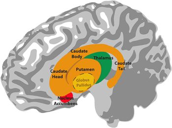
Information flows from widespread areas of the cerebral cortex, through the basal ganglia and thalamus, and back to cerebral cortex. These cortico-basal ganglia-thalamo-cortical loops are important for selecting motor actions, e.g. starting and stopping behaviours, and for aspects of motivated behaviour i.e. selecting actions based on whether they are likely to result in something good or bad happening to the individual. They include excitatory and inhibitory pathways, the balance of which is important for inhibiting or initiating motor outputs (see Interacting with the world).
Disruptions to this circuitry can cause an imbalance between these facilitatory and inhibitory effects, as is seen in a number of neurological conditions including Parkinson’s disease and Huntingdon’s disease, as well as schizophrenia, Tourette’s syndrome, obsessive-compulsive disorder and addiction (see Dysfunctions of the nervous system).
Hippocampus
The hippocampus is an important structure involved in episodic memory, spatial processing and contextual learning.

Fig. 2.19. The hippocampus
It has a distinctly different laminar structure to the cerebral cortex. It is allocortex, with fewer cell layers than neocortex, with a densely packed layer of pyramidal cell bodies, above and below which are layers with only dendritic and axonal processes and much sparser inhibitory neurons. It is formed of two interlinked U-shaped folds, the dentate gyrus and the hippocampus ‘proper’, curved together into an elegant 3D shape, like a seahorse (hippocampus) or a ram’s horn (Cornu ammonis) from which the hippocampal subfields CA1, CA2 and CA3 are named. The hippocampus receives most of its inputs from cortical or subcortical regions via the entorhinal cortex and most of its outputs are sent to cortical or subcortical regions via the subiculum. The fornix, another important output pathway, also connects the hippocampus, via CA3, to the mammillary bodies of the diencephalon.
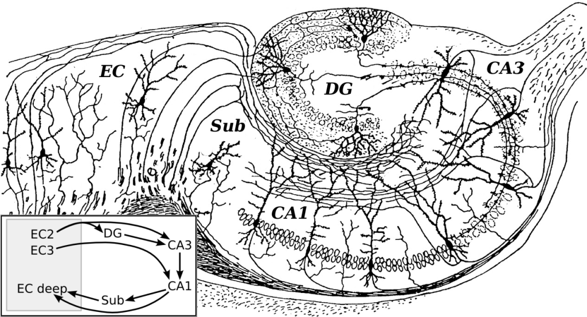
Like the cerebellum, the hippocampus has a well-characterised neuronal circuitry that has provided useful insights into how it fulfils its function. From the entorhinal cortex, inputs via the perforant path synapse on granule cells in the dentate gyrus, which themselves send mossy fibres to CA3. CA3 pyramidal neurons send Schaffer collaterals (axon branches) to CA2 (which is small) and CA1, as well as recurrent collaterals – axon branches that synapse back onto CA3 cells. Changes, during learning, in the strength of connections in these subregions are thought to be important for particular aspects of memory formation and retrieval, particularly the ability to remember more of an event or stimulus when exposed to only part of it (pattern completion), and to remember events or stimuli as distinct from each other (pattern separation).
Damage to the hippocampus produces memory deficits and occurs early in Alzheimer’s disease. Selective hippocampal damage and associated amnesia can also occur when the brain is deprived of oxygen, for example during birth. Because of its recurrent collateral connectivity, whereby excitatory neurons can excite themselves, the hippocampus is also a common focus of epileptic activity, where neuronal circuits are over activated, producing seizures.
Amygdala
The amygdala, named for its almond shape, sits adjacent to the hippocampus beneath the cerebral cortex within the temporal lobe (see Fig. 2.19).
It is important for processing of emotions and for the impact of emotions on learning and has been shown to be particularly involved in fear learning. It is made up of a complex of different nuclei, including the basolateral, corticomedial and centromedial nuclei. It receives inputs from wide regions of sensory and prefrontal cortex, then hippocampus and visceral information from brainstem nuclei, making it able to integrate information about the state of the body with contextual information. Its efferents go to cerebral cortex, particularly prefrontal and cingulate cortex, hippocampus, ventral striatum, thalamus and hypothalamus. This connectivity allows it to produce emotional responses appropriate to a given context; for example, when a stimulus appears that is associated with punishment, a fear response can be produced by altering hormone release via the hypothalamus, triggering freezing behaviours and activation of the sympathetic nervous system via the brainstem.
Key Takeaways: Central Nervous System
- The CNS is made up of the brain and spinal cord
- We can describe where we are in the CNS using the compass directions lateral & medial, anterior & posterior, superior & inferior, dorsal & ventral and rostral & caudal
- The spinal cord takes information to and from the brain to the periphery, as well as performing some information processing in its central grey matter
- The brainstem contains lots of white matter tracts and nuclei containing motor and sensory information and neurons that deal with automatic regulatory functions such as control of heart rate and breathing
- The cerebellum is a laminar structure with a distinct circuitry that supports sensory-motor learning
- The thalamus is an information hub that transfers information to the brain from the periphery and vice versa as well as participating in lots of thalamocortical loops with widespread cortical regions
- The hypothalamus contains lots of nuclei that have important roles in control of homeostasis such as thirst and appetite regulation and is also involved in memory
- The cerebral cortex has 6 layers which are different thicknesses in different functional regions. The cerebral cortex connects to subcortical regions but most often neurons connect to other cortical neurons
- The basal ganglia are subcortical nuclei that are important for initiating and selecting motor behaviours and for motivated behaviour
- The hippocampus is an important structure for memory and has a distinct circuitry that supports its role in forming associations
- The amygdala is intimately connected with the cortex, hippocampus and brainstem and is important for emotional learning and behaviours.
Non-neuronal brain structures
In addition to these various brain regions, a number of other structures of the brain’s anatomy are important to appreciate in order to understand the overall physiology of this organ.
Ventricles
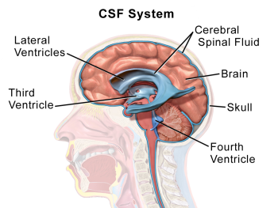
Cerebrospinal fluid and meninges
Within the brain and spinal cord are a series of connected spaces containing cerebrospinal fluid (CSF). The central canal of the spinal cord extends into the brainstem before expanding in the region of the pons to form the fourth ventricle. At the top of the fourth ventricle another narrow channel, the cerebral aqueduct, connects to another broader chamber, the third ventricle, at the level of the diencephalon. From the third ventricle another two narrow channels connect to the large lateral ventricles that extend deep into the cerebrum. The CSF that fills the canals and ventricles is made by ependymal cells that line the ventricles in a specialised membrane structure called the choroid plexus. These ependymal cells surround capillaries of the vascular system and produce CSF by filtering the blood. CSF is similar in content to blood plasma, being mostly water but containing ions and glucose (click here for a table with more information), though it has less protein content than plasma.
CSF flows from the fourth ventricle into the space between the membranes or meninges that cover the brain. There are three meninges; the pia is a delicate membrane that directly covers the brain and spinal cord. Above the pia is a fluid-filled space, then the arachnoid membrane, so called for its web-like strands that connect to the pia through this subarachnoid space. Above the arachnoid is the tough outer membrane – the dura – which supports large blood vessels that drain cerebral blood towards the heart. CSF flows from the ventricles into the subarachnoid space then circulates the brain, before draining into veins in the dural sinuses. CSF functions as a shock absorber for the brain, cushioning the brain from damage during knocks to the head, as well as clearing metabolic waste products from the brain into the blood.
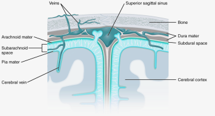
Vasculature
The brain is an energetically demanding organ. It is only 2% of the body’s mass, but uses 20% of its energy when the body is resting (i.e when muscles are not active). It relies on a constant supply of oxygen and glucose in the blood to sustain neurons, with disruption of blood flow to the brain leading to a loss of consciousness within 10 seconds. To deliver a constant flow of oxygenated blood, the brain has a complex and tightly regulated vasculature that directs blood to the most active brain regions. Four arteries feed the brain with oxygenated blood, forming a circle – the circle of Willis – that ensures that a reduction of blood flow to one artery can be compensated for by redistribution of flow from the others. Several large arteries branch off the circle of Willis to perfuse different regions of the brain. Branches of these major arteries form smaller and smaller arteries and arterioles that pass through the subarachnoid space before diving into the brain, before branching yet further to form a dense capillary network.
There are a mind-blowing 1 to 2 metres of capillaries in every cubic millimetre of brain tissue. These capillaries are less than 10 microns in diameter, though, so they only take up about 2% of the brain volume. This means that, in cerebral cortex, each neuron is only around 10-20 microns from its nearest capillary. This dense vascular network can therefore supply oxygen and glucose very close to active neurons.
Specialised mechanisms allow the blood supply to be fine-tuned to brain regions that need it most. Cells called smooth muscle cells or pericytes in blood vessel walls can dilate or constrict to regulate blood flowing through the vessel. Active neurons and astrocytes produce molecules that dilate smooth muscle cells and pericytes on local arterioles and capillaries, increasing blood flow to these regions of increased activity. In fact this increase in blood flow usually supplies more oxygen than is needed, so that blood oxygen levels increase in active brain regions. This increase in blood oxygen gives rise to the BOLD (blood oxygen level dependent) signal that can be detected using magnetic resonance imaging and is often used as a surrogate for neuronal activity in experiments studying the function of different brain regions.

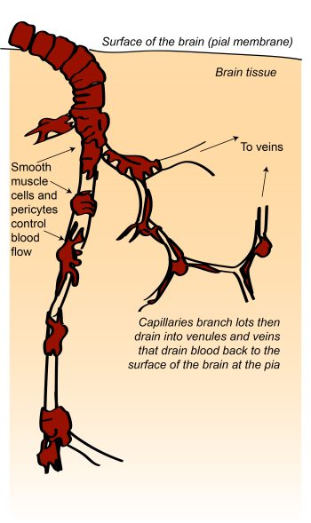
Another specialised feature of the brain’s vascular system is the blood-brain barrier (BBB). The endothelial cells lining blood vessels in the brain are very tightly joined together and express relatively few transporter proteins that allow molecules to be transported from the blood into the brain. This means that it is harder for molecules and cells to access the brain from the blood, protecting the brain from circulating toxins or immune cells.
The brain’s vasculature can be impacted in several neurological conditions, leading to alterations in brain function. In ischaemic or haemorrhage stroke, there is a reduction in the blood supplied to the brain due to either a blockage or leakage in blood vessels feeding the brain. This reduces the oxygen available to the brain region fed by the lesioned vessel, damaging the neurons in that region and causing corresponding functional deficits. In other diseases there is a less severe decrease in blood flow. In Alzheimer’s disease there is a decrease in brain blood flow many years before symptoms develop. It is not yet known what links this decrease in blood flow has with the development of Alzheimer’s disease, but a decreased ability to clear toxic proteins from the brain, an increase in BBB permeability, or a chronic lack of oxygen supply may all be factors.
Key Takeaways: Non-neuronal brain structures
- The ventricles are cavities within the brain that contain CSF
- The brain is surrounded by 3 layers of meninges
- CSF flows between the ventricles and the subarachnoid space within the meninges
- The brain’s blood vessels are specialised, to direct blood flow to active brain regions and to regulate the degree to which molecules and cells in the blood can access the brain.
Overall in this chapter, you have learnt general principles about information flow in the brain, as well as some of the major neuronal and non-neuronal structures that mediate this transfer of information. Next we will explore the signalling and non-signalling cells of the nervous system to understand how they support information flow and computation.
References
Iturria-Medina, Y., Sotero, R. C., Toussaint, P. J., Mateos-Pérez, J. M., Evans, A. C., & The Alzheimer’s Disease Neuroimaging Initiative. (2016). Early role of vascular dysregulation on late-onset Alzheimer’s disease based on multifactorial data-driven analysis. Nature Communications 7, 11934. https://doi.org/10.1038/ncomms11934
Kwon, Diana. The mysterious, multifaceted cerebellum. (2020). Knowable Magazine. https://doi.org/10.1146/knowable-093020-2